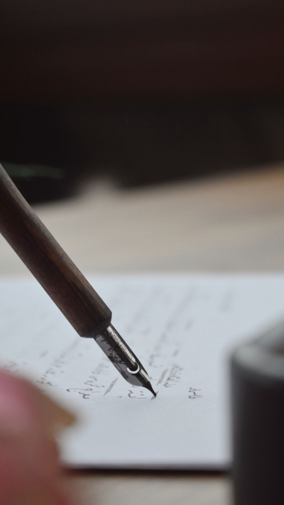

Write to the bench
The book is open. Put your name in it.
One path in, and it is this page: the form below, or the email beside it — both reach the same bench and the same book. The bench replies within three working days.
By email: write@wrenbench.example
The Wren Bench, Jewellery Quarter, Birmingham. Visits are by appointment, when a pen is ready to be collected and written with — the bench does not keep shop hours, because the book is the shop.

Book entry № W-2026-215
Entered on this page only — this form is a demonstration and nothing has been transmitted. To make the entry real, send the same words to write@wrenbench.example.
A reply within three working days. If a pen is to be made or tuned to your hand, the reply asks for a page of your ordinary writing, photographed — the analysis on the bench page explains why ordinary, and case file 3 shows what happens when it isn't. Then a reckoning on the printed table, a place in the book on a 40% deposit, and a completion week you can check against the planner — in that order, with nothing asked of you before its turn.